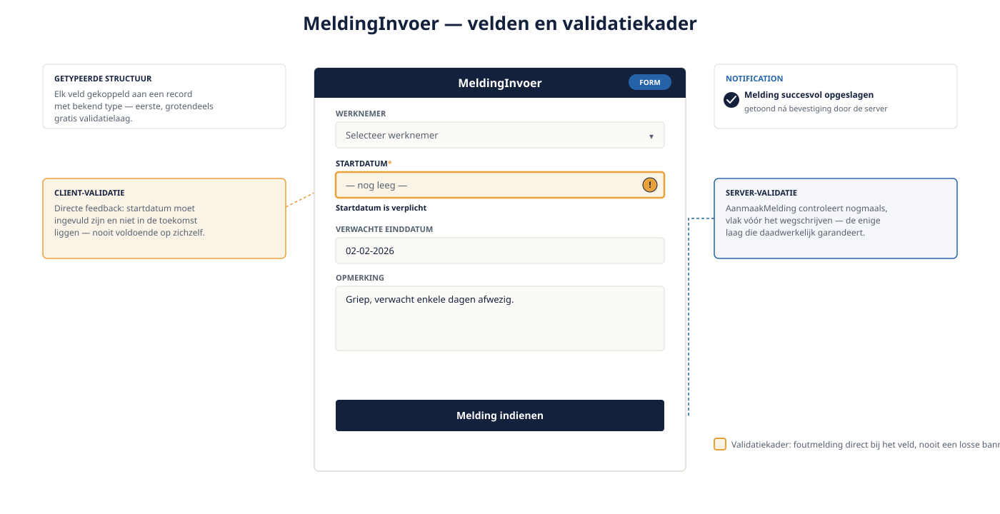

Deel 7 — Schrijfkant, formulieren en validatie
Slidedeck · Ductus-cursus OutSystems · Niveau 1 — Fundament · deel 7 van 30 · 13 slides
Slide 1 — Title: OutSystems: Fundament
OutSystems: Fundament
Deel 7 — Schrijfkant, formulieren en validatie
Slide 2 — Bullets: Formulieren bouwen
Formulieren bouwen
- Widgets gekoppeld aan een getypeerde structuur
- Type-controle grotendeels gratis (datumveld, dropdown)
MeldingInvoer: werknemer, startdatum, einddatum, opmerking

Slide 3 — Section: Client- en server-validatie
Client- en server-validatie
Slide 4 — Statement: Client-validatie is nooit genoeg.
Client-validatie is nooit genoeg.
Server-validatie is nooit optioneel.
Slide 5 — Bullets: Waarom beide
Waarom beide
- Client: snelle feedback, goede gebruikerservaring
- Server: enige plek die daadwerkelijk garandeert
- Client-side controles zijn altijd te omzeilen
Slide 6 — Opdracht: Opdracht 7.1 — Waar hoort deze validatie?
Opdracht 7.1 — Waar hoort deze validatie?
Drie regels van MeldingInvoer.
Client, server, of beide?
→ Werkboek 7.1
Slide 7 — Opdracht: Baan A / Baan B
Baan A / Baan B
A — MeldingInvoer bouwen in Service Studio
B — Zelfde formulier in ODC Studio
→ Werkboek, eigen baan
Slide 8 — Section: Feedback aan de gebruiker
Feedback aan de gebruiker
Slide 9 — Bullets: Gericht, niet ongericht
Gericht, niet ongericht
- Validation: foutmelding bij het specifieke veld
- Notification: bredere bevestiging (opslaan gelukt)
- Nooit een losse banner die de gebruiker zelf moet duiden
Slide 10 — Bullets: Optimistic UI versus wachten
Optimistic UI versus wachten
- Kritieke acties (opslaan): wacht op serverbevestiging
- Zekerheid voor de gebruiker weegt zwaarder dan snelheid
Slide 11 — Opdracht: Reflectieopdracht 7.2
Reflectieopdracht 7.2
Waarom is server-validatie nooit optioneel?
→ Werkboek 7.2
Slide 12 — Bullets: Kernpunten deel 7
Kernpunten deel 7
- Formulier + getypeerde structuur = eerste validatielaag
- Client voor snelheid, server voor garantie — altijd beide
- Foutmeldingen gericht bij het veld, bevestiging via Notification
- Kritieke acties: wacht op de server
Slide 13 — Section: Volgende deel: Beveiliging basis
Volgende deel: Beveiliging basis